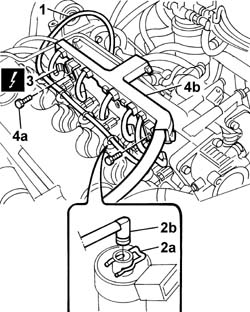
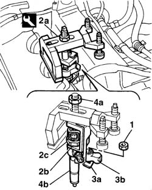

1060F10 INJECTORS - R.R.
- Path
- Procedures > 10 ENGINE > 1060 DIESEL FUEL INJECTION SYSTEM > 1060F INJECTORS AND LINES > 1060F10 INJECTORS - R.R.
- Kind
- repair procedure (removal / refitting; the operation number is the code)
- Applies to
- engines: 2.4 JTD 10V; all production periods
- Interactive page
- https://sloeber94.github.io/elrnDB-lThss/en/#/100673
Applies to: all engines; all production periods
 Removing
Removing
 Refitting
Refitting- Open the boot and disconnect the negative battery terminal.
See in Op. 1016A10
See in Op. 1060F36
1. Disconnect the pipe between the injectors and the fuel recovery manifold from the manifold.
2. Push the springs (2a) manually and disconnect the pipe from the connectors (2b) on the injectors.
3. Disconnect the electrical connections for the injectors.
 | Description | Connector |
|---|---|---|
3 | Injector | N070A |
| Description | Connector |
|---|---|---|
3 | Injector | N070B |
| Description | Connector |
|---|---|---|
3 | Injector | N070C |
| Description | Connector |
|---|---|---|
3 | Injector | N070D |
| Description | Connector |
|---|---|---|
3 | Injector | N070E |
4. Undo the fixing bolts (4a) and move the wiring duct (4b) aside to allow the subsequent positioning of the tool for extracting the injectors.

Applies to: all engines; all production periods
1. Undo the nuts fixing the injector mounting brackets.
2. Position the tool (2a) for extracting the injectors, taking care to position the lifting bracket (2b) under the polygonal area (2c) of the injector.
3. Position the second tool lifting bracket (3a) under the injector securing bracket (3b).
4. Tighten the tool nut (4a) and remove the injector assembly (4b).
- Repeat the operation for the remaining injectors.
 | Description | Code | Function |
|---|---|---|---|
2a | Extractor | 1.870.739.000 | Tool for removing injectors |

Applies to: all engines; all production periods
Refitting
Removing- Check the condition of the injectors.
- Position the injectors complete with brackets.
- Tighten the fixing nuts to torque.
 | Value - daNm | Fastening | Component | Ø |
|---|---|---|---|---|
. | 3 | Nut | INJECTORS(DIESEL) | M8X1,25 |
- Position the cable duct and tighten the fixing bolts.
- Connect the electrical connections for the injectors.
| Description | Connector |
|---|---|---|
. | Injector | N070A |
| Description | Connector |
|---|---|---|
. | Injector | N070B |
| Description | Connector |
|---|---|---|
. | Injector | N070C |
| Description | Connector |
|---|---|---|
. | Injector | N070D |
| Description | Connector |
|---|---|---|
. | Injector | N070E |
- Connect the springs for the pipe to the injectors and connect the pipe to the return manifold.
See in Op. 1060F36
See in Op. 1016A10
- Open the boot and connect the negative battery terminal.